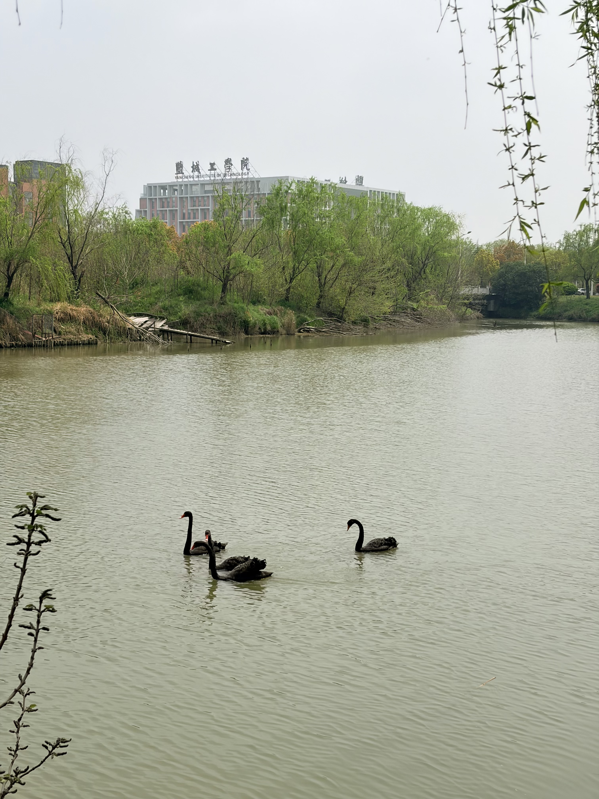
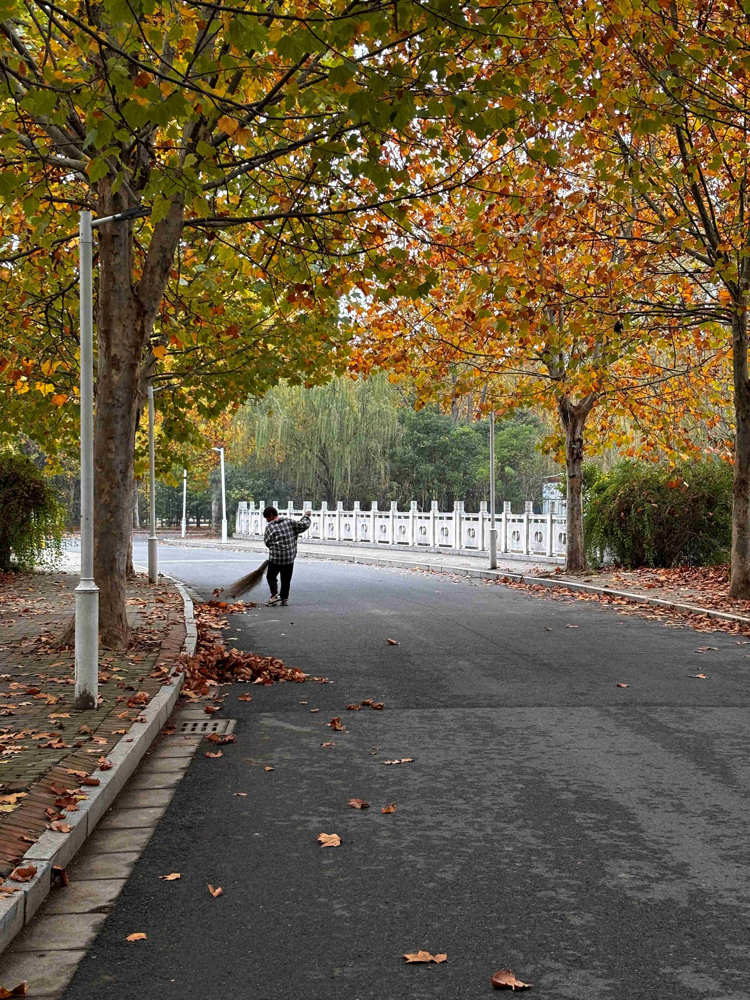
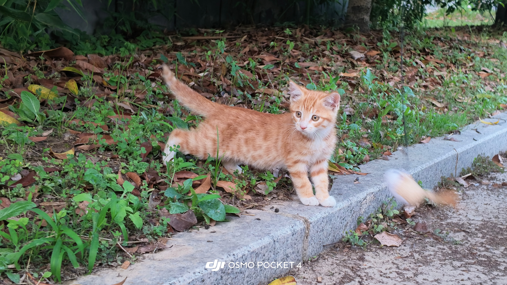

NO. 01 / SPRING
春江水暖
新柳从画面边缘垂落，黑天鹅游过青矜湖面，远处教学楼藏在初春的绿色里。开阔的留白让水面成为主体，也让校园的春意显得安静而舒展。
- 拍摄地点
- 盐城工学院杜成大道青矜湖畔
- 拍摄时间
PHOTOGRAPHY ARCHIVE · SELECTED WORKS
自然 · 城市 · 人文
Selected Works
这里是持续生长的个人摄影档案。作品不限定地点与题材，从自然景观、城市空间到人物和日常细节，每一张照片都记录一次观看，也保存一段具体的时间。

NO. 01 / SPRING
新柳从画面边缘垂落，黑天鹅游过青矜湖面，远处教学楼藏在初春的绿色里。开阔的留白让水面成为主体，也让校园的春意显得安静而舒展。

NO. 02 / AUTUMN
道路与树干构成天然的纵深框架，金黄梧桐围住画面中央的清扫者。扫帚扬起又落下，平凡的校园劳动在秋色中呈现出安静而有节奏的诗意。

NO. 03 / MOMENT
低机位将视线放到小猫的高度，橘色身影停在草地与路沿之间，目光紧紧追随着快速掠过的逗猫棒。清晰的凝视与模糊的动态形成对照，留下轻快而生动的一瞬。

NO. 04 / BLOOM
盛放的粉色花树从画面右侧铺展，与博学楼规整的建筑线条彼此映衬。天空留下充足的呼吸空间，繁花、校园与春日云色共同构成明朗而富有层次的景象。